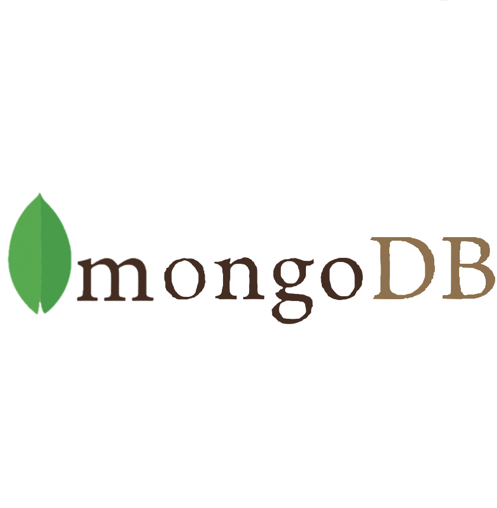
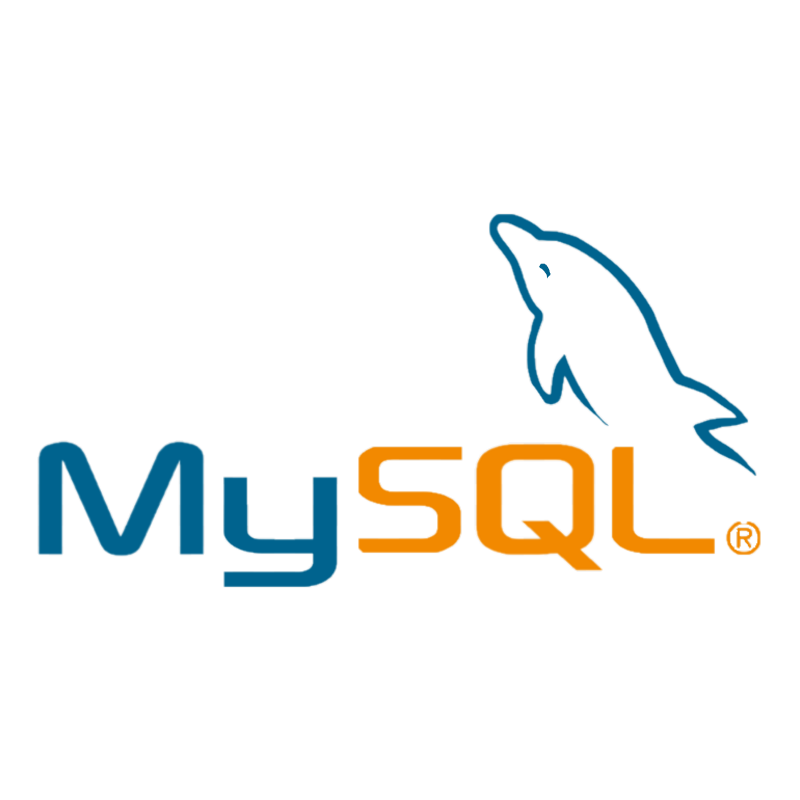
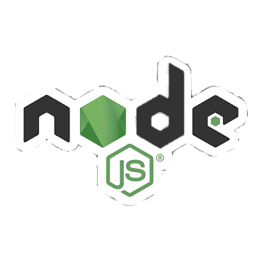
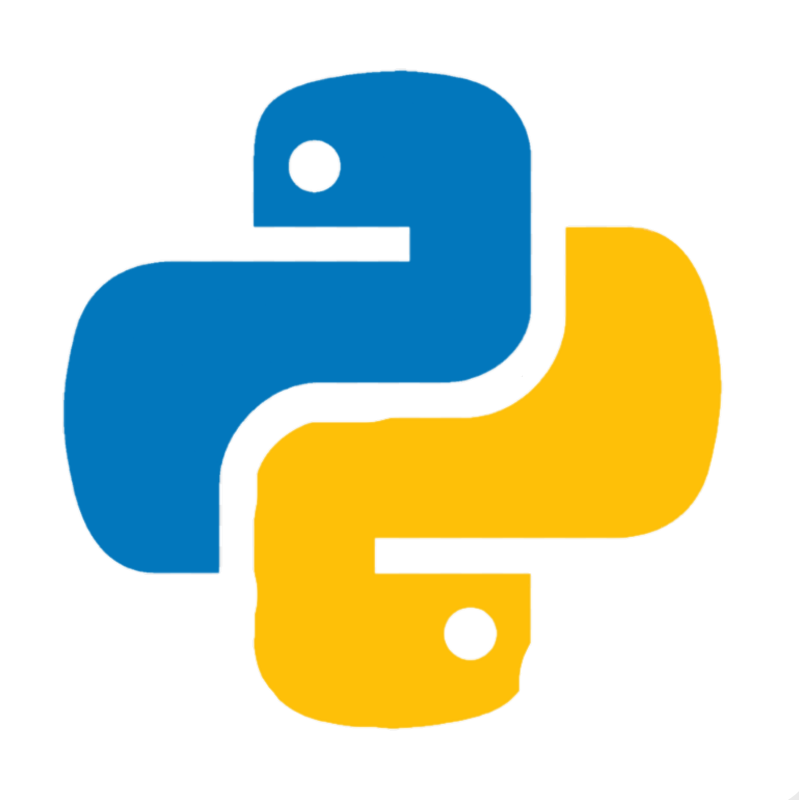
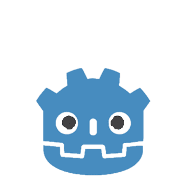
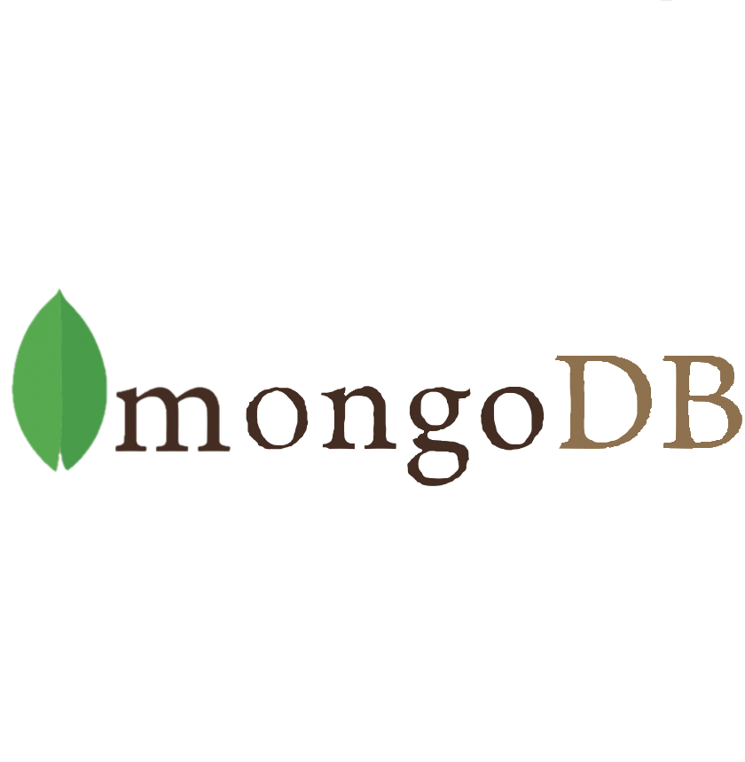
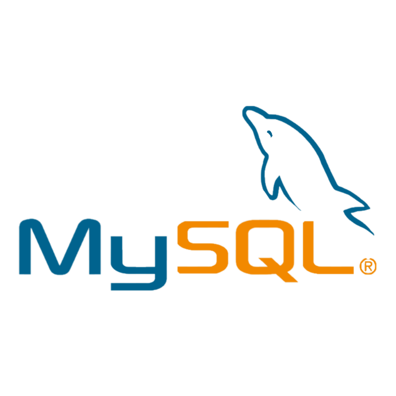
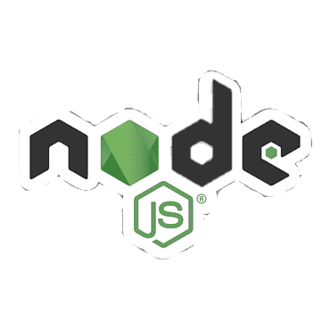
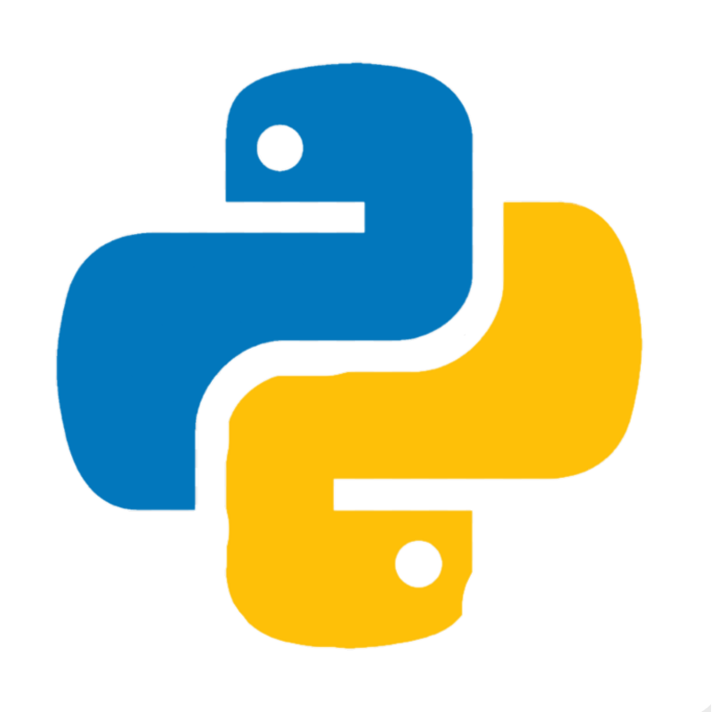
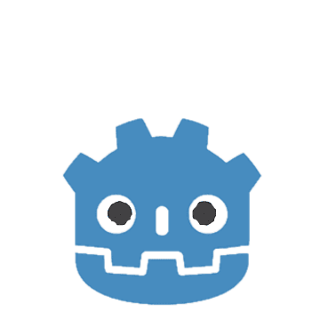

¡Hola! Me llamo Elías y soy desarrollador Full Stack aunque me especializo en el desarrollo Backend.
Mi stack principal es MERN (MongoDB, Express.js, React, Node.js), pero también tengo experiencia con frameworks como Django (Python) y NestJS (TypeScript) que son ideales para construir backends más robustos y escalables. Manejo bases de datos relacionales como MySQL y PostgreSQL, así como no relacionales (NoSQL) como MongoDB.
Actualmente soy estudiante de la Tecnicatura en Programación, donde profundizo en algoritmos, estructuras de datos y diseño de software. Complemento mi formación academica participando en simulaciones laborales en No Country, colaborando en proyectos MVP reales bajo metodologías ágiles (SCRUM), en equipos multidisciplinarios con frontend, QA y UX/UI.
Además, participo activamente en game jams donde desarrollo videojuegos en el motor Godot Engine. Estas experiencias ponen a prueba mi creatividad, resolución de problemas y lo mas importante disfrutar del proceso de desarrollo.
Para mi el aprendizaje es constante y creo que hay que combinar la teoría con la práctica real.
Siempre estoy en busca de nuevos desafíos que me permitan seguir creciendo, explorar nuevas tecnologías y adquirir nuevas habilidades.
Plataforma web desarrollada en Django para la gestión de cursos marciales de la escuela Tien Long Hu. Los usuarios pueden registrarse, gestionar su perfil, inscribirse a cursos y acceder a noticias. El sistema genera tickets de compra, actualiza automáticamente el cupo de los cursos y admite pagos con Mercado Pago. El administrador (cliente) puede gestionar cursos y noticias fácilmente desde el panel de administración de Django, sin necesidad de conocimientos técnicos. Utiliza Django REST Framework, Bootstrap, AJAX, animaciones con GSAP y autenticación JWT. Proyecto con aplicación real, solicitado por la escuela Tien Long Hu para promover y administrar sus cursos en línea.
Ver en GitHubE-commerce AMA es una tienda online desarrollada con React.js y Vite que permite a los usuarios explorar productos, agregarlos al carrito y gestionar sus compras de forma dinámica. Utiliza Firebase como base de datos en tiempo real, React Router Dom para la navegación entre vistas y SweetAlert2 para mostrar notificaciones interactivas. El diseño es completamente responsive, adaptándose a distintos dispositivos, y cuenta con estilos personalizados para una mejor experiencia de usuario. Incluye lógica de control del carrito, validaciones y almacenamiento persistente. Proyecto ideal como ejemplo de SPA moderna con integración a servicios en la nube. Probar demo
Ver en GitHubAPI RESTful para e-commerce desarrollado con Express y MongoDB, que permite gestionar productos y carritos mediante operaciones CRUD completas. Incluye un sistema de login seguro con JWT, autenticación basada en bcrypt, Passport y manejo de cookies. La aplicación genera tickets de compra al finalizar una orden y actualiza automáticamente el stock de productos. Emplea patrones de diseño DAO y Repository para una estructura modular, además de DTOs y variables de entorno para mayor seguridad y escalabilidad. Para el frontend, utiliza plantillas Handlebars que facilitan la renderización dinámica de vistas, ofreciendo una interfaz básica para probar y consumir las funcionalidades de la API.
Ver en GitHubChat_v0.10 es un mini chat en tiempo real desarrollado con Express, Handlebars y Socket.io. Esta aplicación permite que múltiples usuarios conectados puedan enviar y recibir mensajes instantáneamente, logrando una comunicación fluida y sincronizada. Express se encarga del servidor y manejo de rutas, mientras que Handlebars facilita la generación dinámica de las vistas en el frontend. Socket.io gestiona la conexión WebSocket para la comunicación bidireccional en tiempo real entre el cliente y el servidor, garantizando que los mensajes se transmitan al instante a todos los usuarios conectados sin necesidad de recargar la página. Esta implementación es ideal para entender conceptos básicos de comunicación en tiempo real y desarrollo fullstack. Probar demo
Ver en GitHubEs una simulación de tienda online de artículos para artes marciales, creada con HTML, CSS y JavaScript. Incluye validación de email con expresiones regulares y alertas personalizadas usando SweetAlert2 para mejorar la experiencia del usuario. El carrito es persistente, guardando los productos en LocalStorage para mantenerlos aunque se recargue la página. Los productos se cargan desde un archivo JSON que simula una base de datos. El diseño es responsive, adaptándose a distintos dispositivos, y el proceso de compra está validado y protegido con manejo de errores para evitar fallos durante la interacción. Probar demo
Ver en GitHubEsta aplicación de escritorio está desarrollada en Python 3 siguiendo el patrón MVC y utilizando programación orientada a objetos. La interfaz gráfica se implementó con Tkinter, mientras que la gestión de la base de datos SQLite se realiza mediante la librería Peewee. La comunicación cliente-servidor se establece a través de sockets, utilizando localhost o una IP de red configurable en el puerto 9999. Se incorporaron decoradores para registrar detalladamente las llamadas a funciones en archivos de log, así como el patrón observador para monitorear altas en la base de datos, registrando esta información tanto en consola como en una tabla específica. Además, el proyecto cuenta con documentación generada con Sphinx para facilitar su mantenimiento y evolución.
Ver en GitHubBlogCafe es una aplicación web desarrollada con Django que simula un blog de cursos sobre la preparación de distintos estilos de café. Requiere autenticación para navegar y ofrece funcionalidades como registro de usuarios, edición de perfil (incluyendo cambio de avatar, datos personales y contraseña), deslogueo e inicio de sesión con diferentes cuentas. Los usuarios pueden visualizar el listado de cursos disponibles, dejar comentarios y enviar consultas de contacto desde cada curso. También pueden dejar mensajes en una sección dedicada. Los superusuarios tienen acceso ampliado para crear, editar y eliminar cursos directamente desde la interfaz, sin necesidad de ingresar al panel /admin. La app fue construida utilizando el patrón MVT de Django, con SQLite como base de datos, HTML y CSS nativo para la interfaz, y Bootstrap para el diseño responsivo..
Ver en GitHubBomberman Clone es una demo desarrollada en Godot 4, inspirada en el clásico juego retro Bomberman. El objetivo del jugador es explorar el nivel, destruir cajas, eliminar enemigos, encontrar la llave y alcanzar la puerta para avanzar, todo mientras gestiona cuidadosamente el uso limitado de bombas. El proyecto fue realizado como parte del curso de Godot 4 dictado por FerTer GameDev, utilizando assets de Kenney.nl y Tumas81 (minerman-adventure). Se implementaron sistemas de colisión, lógica de enemigos, detección de eventos y mecánicas clásicas de colocación y explosión de bombas, aprovechando las herramientas modernas del motor Godot 4. Probar demo
Ver en GitHubEste repositorio contiene el servidor backend para la simulación de nuestro equipo, con una API RESTful enfocada en la gestión de usuarios y documentación automática. Tecnologías clave: Backend con Node.js, Express, MongoDB y Mongoose para modelar datos. Uso de Swagger para la documentación automática, Nodemon para desarrollo, CORS para la integración con frontend y Cloudinary para manejo de imágenes. El frontend se desarrolló con Angular, Angular Material y Bootstrap, asegurando una UI moderna, responsive y con buena navegación gracias a Angular Router y Flex Layout. Este proyecto forma parte de una simulación profesional donde trabajamos en un entorno colaborativo con roles definidos: Backend, Frontend y QA, siguiendo buenas prácticas de desarrollo y control de versiones.
Ver en GitHubSi te interesa colaborar, tenés una propuesta o simplemente querés ponerte en contacto, no dudes en escribirme. Estoy abierto a oportunidades laborales, proyectos freelance y colaboraciones.
Descargar CV 








